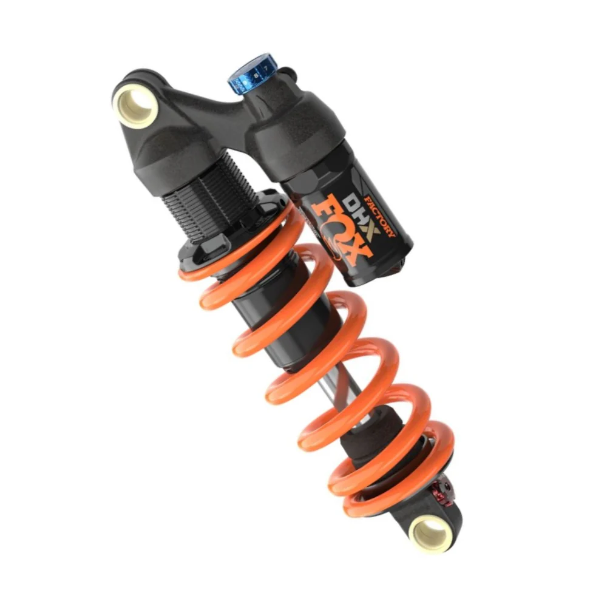

Nuestros Servicios

Mantenimiento de Horquillas
Mantenimientos de las principales marcas. FOX, Rockshox, Manitou, Marzzochi, Öhlins, Sr Suntour, DVO.

Servicio de Amortiguadores
Mantenimientos de las principales marcas. FOX, Rockshox, Manitou, Marzzochi, Öhlins, Sr Suntour, DVO.

Tuning y Ajuste Personalizado
Optimizamos tu suspensión para tu peso, estilo de manejo y terreno para que disfrutes de Barcelona, Colserolla o donde quiera que vayas.

Reparación de Componentes
Diagnosticamos y reparamos casi todas las marcas de suspensiones para bicicleta mtb y gravel.